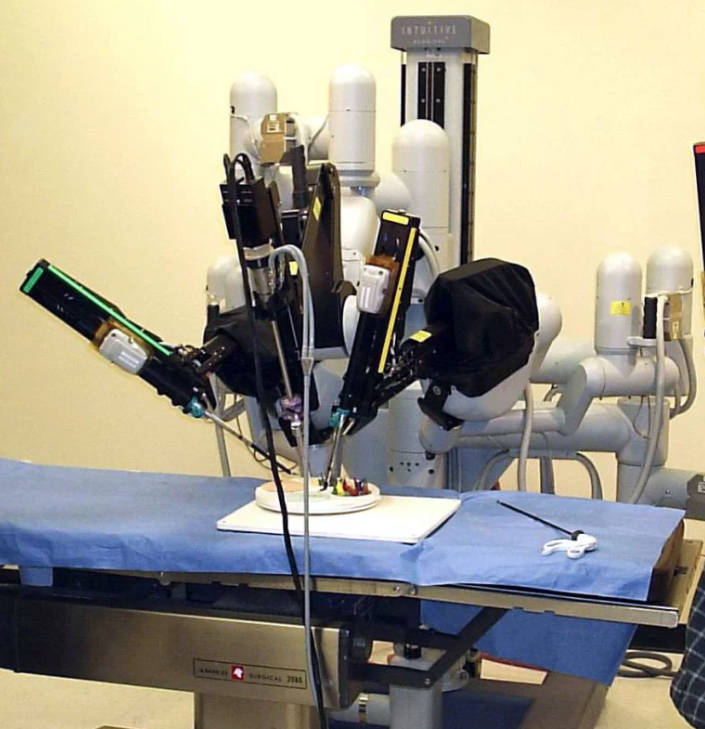

Introduction
Les robots chirurgicaux sont des dispositifs technologiques avancés utilisés pour assister les chirurgiens lors d'interventions chirurgicales. Ces robots sont conçus pour effectuer des mouvements précis et minutieux à l'aide d'instruments chirurgicaux miniaturisés, qui sont contrôlés par le chirurgien depuis une console à distance.
La création
Le premier robot chirurgical a été créé par le docteur américain Leonard A. Shlain et l'ingénieur électrique américain Kenneth Salisbury dans les années 1980. Ils ont conçu le robot pour aider les chirurgiens à effectuer des opérations avec une plus grande précision et une meilleure vision. Ce premier robot chirurgical s'appelait "Arthrobot", et il a été utilisé pour des opérations orthopédiques.

Le prix
Le coût d'un robot chirurgical dépend du modèle, du fabricant et de la région géographique où il est utilisé. En général, les robots chirurgicaux sont des équipements très coûteux, avec un prix moyen pouvant atteindre plusieurs millions d'euros.
Le système da Vinci de la société Intuitive Surgical, qui est l'un des robots chirurgicaux les plus couramment utilisés, peut coûter entre 1,5 million et 2,5 millions d'euros, selon le modèle et les accessoires inclus. En plus du coût initial du robot, il y a également des frais associés à la formation et à la maintenance du personnel médical pour utiliser l'appareil.
Bien que les coûts élevés puissent représenter un obstacle pour certaines institutions médicales, les avantages potentiels des robots chirurgicaux en termes de précision, de sécurité et de récupération plus rapide des patients ont conduit de nombreuses institutions à investir dans ces technologies avancées.